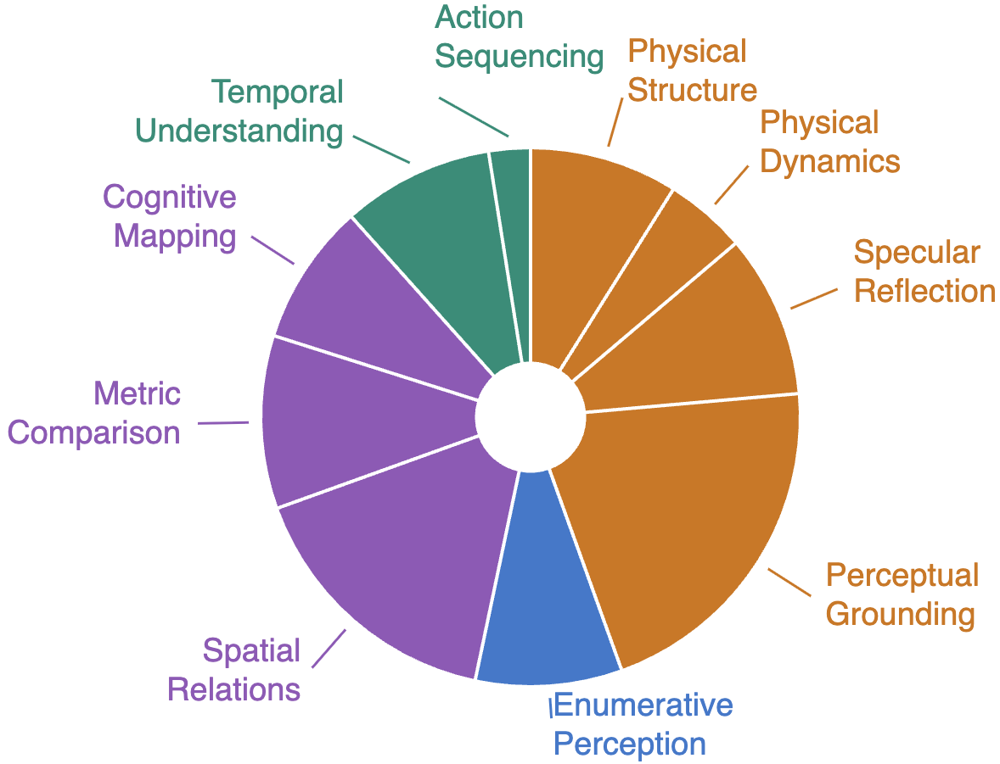
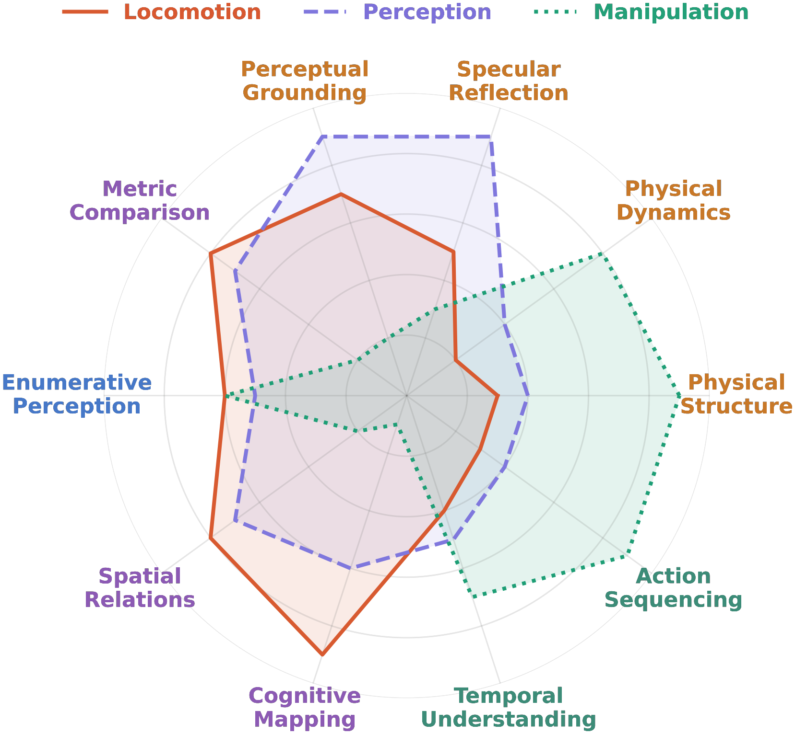

Rigid Containment
Plan placement of multiple objects across multiple containers.
🔊 Click the video to turn on sound for the full demo experience
Spatial intelligence unfolds through a perception–action loop: agents act to acquire observations, and reason about how observations vary as a function of action. Rather than passively processing what is seen, they actively uncover what is unseen — occlusion, dynamics, containment, and functionality — beyond the reach of passive sensing. We take a step beyond prior formulations of spatial intelligence, which often emphasize passive perception or assume access to oracle observations, by recasting the observer as an actor. We introduce ESI-Bench, a comprehensive benchmark for embodied spatial intelligence spanning 10 task categories and 29 subcategories built on OmniGibson, grounded in Spelke's core knowledge systems. Agents must decide what abilities to deploy — perception, locomotion, and manipulation — and how to act to answer questions that cannot be resolved from passive observation alone. We conduct extensive experiments on state-of-the-art MLLMs and find that active exploration substantially outperforms passive counterparts, with agents spontaneously discovering emergent spatial strategies without explicit instruction, while passive multi-view adds noise rather than signal despite consuming far more images. Most failures stem not from weak perception but from action blindness, and their coupling drives cascading failures where bad actions produce bad views which produce worse actions. While explicit 3D grounding stabilizes reasoning on depth-sensitive tasks, imperfect reconstruction proves more harmful than 2D baselines by actively distorting spatial relations. Human studies further reveal that, unlike humans who seek falsifying viewpoints and revise beliefs under contradiction, models commit prematurely with high confidence regardless of evidence quality, exposing a metacognitive gap that neither better perception nor more embodied interaction alone can close.
Each category targets a distinct spatial faculty structurally inaccessible to passive sensing. Across all categories, the correct answer emerges not from any single image but from the agent's capacity to act selectively and reason over the result.
Manipulation reveals containment capacity hidden from view.
Plan placement of multiple objects across multiple containers.
Compare liquid-holding capacity across containers.
Decide whether a deformable container conforms to an object.
Predict motion and stability under shape, mass, geometry.
Predict object motion and stability on slopes.
Whether objects stack or balance given shape, mass, and geometry.
Active repositioning to disambiguate mirror vs. real-world content.
Distinguish real objects from mirror reflections.
Infer relations across mirror and real-world views.
Identify which objects appear in the mirror given the real scene.
Repositioning to resolve viewpoint-dependent phenomena.
Reason about objects hidden behind other scene elements.
Detect objects whose visibility changes critically with viewing angle.
Reason about objects seen through transparent surfaces.
Locomotion to overcome forced-perspective distortions.
Compare relative sizes of objects across vantage points.
Compare relative distances with respect to a reference object.
Counting under occlusion, segmentation, and ambiguity.
Count objects partially obscured by other scene elements.
Count objects separated across distinct spatial regions.
Count visually similar objects requiring fine-grained distinction.
Count groups that appear visually merged from a single view.
Count objects under challenging or non-uniform lighting.
Count objects hidden within enclosed or covered spaces.
Navigation to vantage points that break projective symmetry.
Whether objects are arranged along a common axis.
Identify the shape formed by a set of objects (e.g., equilateral triangle).
Detect whether two or more objects are in direct contact.
Multi-step locomotion to construct topological representations.
Whether two locations or regions are mutually reachable.
Identify navigable corridors or passageways between regions.
Identify and delineate distinct functional spatial regions.
Plan multi-step navigation toward a distant goal.
Manipulation and interaction to trigger or observe state changes.
Infer scene changes that occurred during an unobserved interval.
Reason about scene dynamics induced by other agents.
Reasoning over ordered actions to determine causal dependencies.
Determine the correct procedural ordering of an action sequence.
Agents are evaluated not only on what they can perceive, but on whether they know how to act to perceive it — closing the loop between observation and action.
Agents must determine which observations are worth acquiring, prioritizing task-relevant information over redundant or uninformative inputs.
Agents must reason through incomplete or misleading observations to infer hidden spatial structures and physical constraints beyond what is directly observed.


Emergent Capabilities: Is the chestnut in the glass?
Top Down
Move Behind
Pick Up
Pour Down